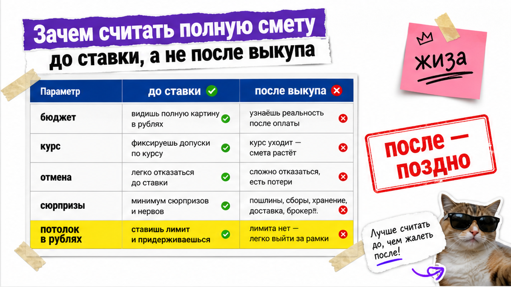
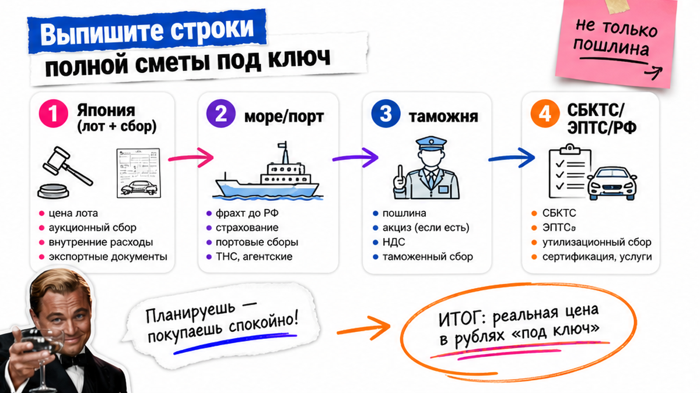
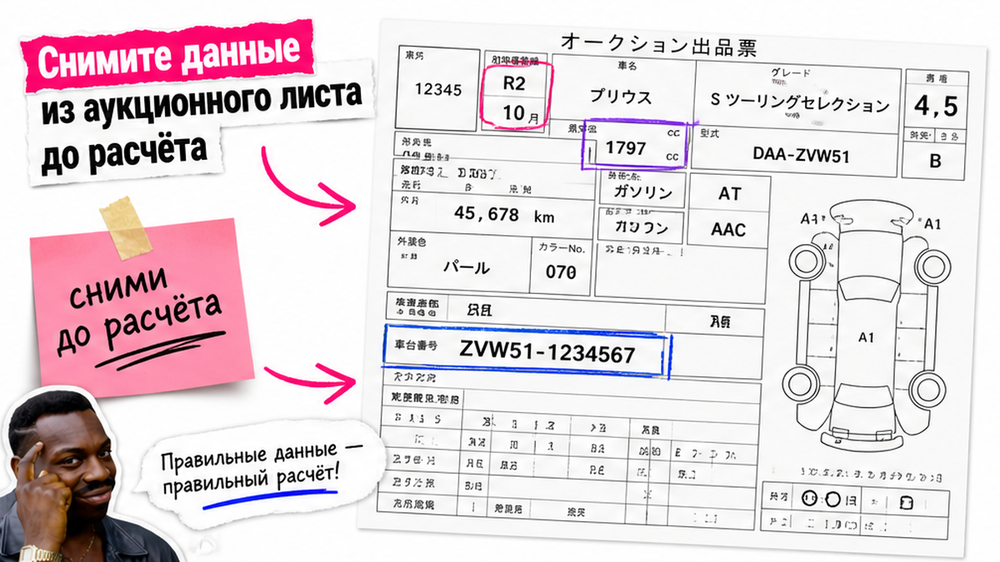

Андрей из Новосибирска увидел Toyota за 700 000 йен, перевёл "по курсу с телефона" и решил, что уложится в бюджет. Ставку поставил – а потом выяснил, что в смету ещё не вошли фрахт, пошлина, утильсбор и СБКТС, а мощность версии чуть выше льготного порога. Типичная боль новичка: цена лота в йенах кажется почти итогом. Ниже – как до молотка собрать полную стоимость авто из Японии под ключ и зафиксировать потолок ставки в рублях.
Суть до ставки: Цена молотка на японском аукционе часто около половины итога во Владивостоке (коридор множителя примерно 1,9–2,2 к лоту). "Калькулятор растаможки" и "калькулятор привоза под ключ" – разные инструменты: первый не считает аукционные сборы, фрахт, СБКТС/ЭПТС и доставку по РФ. До ставки соберите построчную смету, запас на курс и проверку мощности около 160 л.с.
Хаб логистики для японского потока – Владивосток: порт, СВХ, таможня, дальше – автовоз или железная дорога по России. Считать нужно не "сколько йен на экране", а сколько рублей на руки в своём городе. На практике красивый лот раздувается вдвое ещё до прибытия, если в голове была только цена аукциона.
Ниже – рабочая схема на 2026 год: строки сметы, данные из аукционного листа, три типичные ошибки и чек-лист из 10 пунктов перед первой ставкой. Точные суммы пошлины и утильсбора под конкретный лот не печатаем статичной таблицей – их берут по дате сделки у исполнителя или в каталоге.

После выкупа отменить ставку уже поздно: лот ваш, и каждая "забытая" строка бьёт по карману. Сделайте расчёт до торгов. Не делайте ставку "на глаз" по одной цифре в йенах. Избегайте ставки без построчной сметы – это самая частая ошибка новичка.
Удобная картинка из открытых разборов 2026 – "четыре кассы":
Схема до ставки:
Бюджет в своём городе → запас на курс → строки сметы → данные из листа → потолок ставки в йенах → торги
Например, если итог в РФ без полной сметы может оказаться в 1,8–2,5 раза выше цены аукциона, то "чуть дороже лота" – уже опасная иллюзия. Рекомендация: сначала потолок в рублях, потом лимит ставки в йенах, а не наоборот.

Боль, которую закрывает этот блок: вы путаете таможенный калькулятор с полной ценой привоза. Сделайте полный список строк. Не останавливайтесь на пошлине и утильсборе. Используйте чеклист строк ниже как рабочий шаблон, а не «одну цифру под ключ».
| Блок сметы | Что входит | Есть ли в "только растаможке" |
|---|---|---|
| Лот и Япония | Цена молотка, аукционный/площадочный сбор, доставка по Японии | Нет |
| Море и порт | Фрахт до Владивостока, портовые/складские расходы | Нет |
| Таможня | Пошлина, таможенный сбор, утильсбор, услуги брокера | Частично да |
| Документы и РФ | СБКТС, ЭПТС, иногда ГЛОНАСС по ситуации, доставка по РФ, учёт | Нет |
СБКТС – это сертификат безопасности конструкции (бумажка, без которой машину не "оформляют" дальше). ЭПТС – электронный паспорт транспортного средства. Без этих строк учёт не завершить, даже если пошлина уже оплачена.
Типичная ошибка: открыть "калькулятор авто из Японии" на сайте с полями объёма и мощности и принять цифру за итог под ключ. В реальном проекте туда часто не попадают аукционный сбор, фрахт, СБКТС/ЭПТС и автовоз. Рекомендация: пометьте в блокноте две колонки – "посчитал калькулятор" и "ещё спросить у исполнителя".
Построчный расчёт под конкретный лот удобно запросить в каталоге Авто-Сейлс – без одной цифры "от" и без форм на этой странице.

Калькулятор врёт не сам по себе – врёт вход. Делайте выписку полей из листа. Не подставляйте "год с карточки" вместо месяца выпуска.
На практике новичок смотрит "2018" в листе и думает, что возрастная корзина уже ясна. Если месяц выпуска другой, пошлина может уехать в соседнюю ступень. Рекомендация: в расчёт идут выпуск и объём, а не "красота" цены лота.
Именно здесь чаще всего срывается бюджет Андрея. Делайте три проверки до любой ставки. Не надейтесь, что "потом менеджер поправит".
Депозит и финальная оплата могут пройти по разным курсам. Колебание 3–5% за сутки спокойно съедает десятки тысяч рублей. Считайте по курсу фактической оплаты/банка, не по "красивому" курсу из приложения. Заложите запас на курс в бюджет до города назначения.
Для физлица с обычным ДВС льготный утильсбор связан с порогом примерно ≤160 л.с. (плюс условия личного ввоза, частоты и срока владения – их уточняют на дату сделки). Ориентиры льготы в открытых разборах 2026: порядка 3 400 ₽ для авто до 3 лет и 5 200 ₽ для более возрастных – при соблюдении условий. Чуть выше порога – и утильсбор может вырасти на порядки (сотни тысяч вместо льготных тысяч). Типичная ошибка: смотреть модель "в целом", а не мощность конкретной версии в листе.
Лот ≈ 46–52% итога во Владивостоке в массовом сегменте с льготным утилем – это не гарантия экономии, а напоминание, что молоток не равен выдаче. Не сравнивайте "свой" бюджет с чужим скрином, где не видно строк по Японии и РФ.
Вердикт по ловушкам: если мощность спорная, курс без запаса или в смете только йены лота – ставку не ставьте. Сначала закройте три проверки письменно.
Это ваш первый понятный результат на сегодня: заполненный список без команды "разработчиков" и без оплаты депозита. Сделайте галочки до торгов. Не выходите на аукцион с пустыми строками "потом разберёмся". После чеклиста вы сможете зафиксировать потолок ставки и получите критерий: пустых строк в смете нет.
Критерий успеха простой: у вас есть заполненные строки сметы, потолок ставки в йенах с запасом на курс и список вопросов исполнителю до торгов – а не после.
Материал проверен: Редакция Авто-Сейлс – эксперты по авто под заказ из Японии, Кореи и Китая (Владивосток).
Достоверность: структура сметы и типичные ошибки сверены с открытыми гайдами и калькуляторами на 2026 год (в т.ч. логика полной сметы AZWAY/MySakura, таможенные калькуляторы Дром/TKS, разборы полной стоимости на vc.ru Decoded) и практикой сопровождения заказов через Владивосток; актуальные цифры по лоту – в каталоге на дату сделки.
Калькулятор только растаможки считает пошлину, сбор и утильсбор. Калькулятор привоза (полной стоимости) добавляет лот, расходы в Японии, фрахт, СБКТС/ЭПТС и доставку по РФ. Перед ставкой нужен второй тип – иначе бюджет гуляет на "невидимых" строках.
Спросите разбивку: аукционный сбор, логистика по Японии, фрахт и порт, пошлина, таможенный сбор, утильсбор, брокер, СБКТС/ЭПТС, доставка до вашего города, учёт. Если отвечают одной цифрой "под ключ" без строк – это красный флаг.
Нет. Ориентир без строк не равен оферте: курс, мощность и возраст ещё могут сдвинуть итог. Просите письменную смету по лоту до ставки и сверяйте с чек-листом из 10 пунктов.
Для автомобилей возрастом 3–5 лет пошлина физлица обычно считается от объёма двигателя (EUR за см³), а не от цены молотка. Сначала смотрите cc и месяц выпуска, потом красоту цены в йенах.
Считайте по курсу банка/оплаты, не по бирже из уведомления. Добавьте резерв порядка 3–5% к йеновой части и только после этого ставьте потолок ставки. Иначе волатильность за сутки съедает "запас" на документы.
Сверьте л.с. и кВт в аукционном листе конкретной комплектации и уточните право на льготный утильсбор физлица на дату сделки. Если версия выше порога – пересчитайте смету или смените лот до торгов, не после.